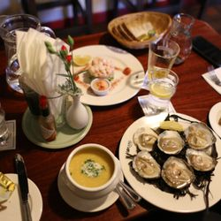
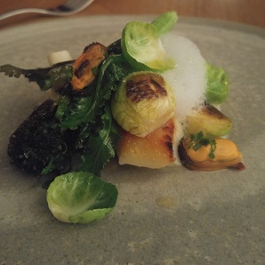

Here are some recommendations for some amazing restaurants for you to visit on your trip to Galway.
You’ll often find queues out the door for delicious, authentic wood-fired pizzas at this fast-growing newcomer to the Galway food scene.
Address: 1, Cathedral Building, Middle Street, Galway
Website: TheDoughBros.ie
For the freshest and best seafood on the west coast, Galway locals know to go to Moran’s where the specialty is local Clarenbridge oysters.

Address: The Weir, Kilcolgan, Co. Galway
Website: MoransOysterCottage.com
Fancy a fancy night out? Head to the Michelin-starred Loam for the day’s seasonal tasting menu featuring modern cooking and local produce.

Address: Geata na Cathrach, Fairgreen, Galway
Website: LoamGalway.com